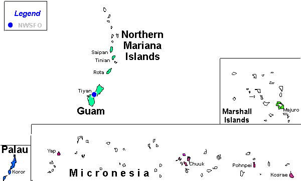

TERRITORY Warning, Forecast & Observation Selection Page for Guam Select desired area(s) by map number(s) or use drop down windows below 
Select by Area Name Chuuk Guam Kosrae Majuro Palau Pohnpei Rota Saipan Tinian Yap